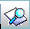

PULSANTE
DESCRIZIONE

Questo pulsante ha
lo scopo di stampare il contesto (videata)

Questo pulsante ha
lo scopo di creare una nuova
maschera e consentire di inserire nuovi dati

Questo pulsante ha
lo scopo di consentire di
modificare i dati della maschera visualizzata

Questo pulsante ha
lo scopo di consentire di cancellare i dati della maschera
visualizzata

Questo pulsante ha lo scopo di consentire di eseguire la funzione selezionata; sarà visualizzata la maschera relativa alla nuova funzione da utilizzare
Questo pulsante ha lo scopo di consentire di tornare, visualizzandola, alla maschera precedente a quella attuale